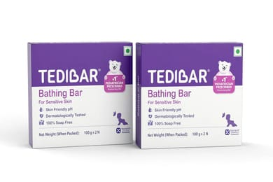

7%
OFF
OFF

4 MINS
Tedibar Moisturising Baby Bathing Bar 100x2g (Pack of 1) 100% Soap Free No. 1* Pediatrician Prescribed Moisturising Bar - By Torrent Pharma
Moisturizing Bar, Pediatrician Recommended.
200 g
₹517 ₹556
🏪
Explore all products from Tedibar
›How to Use
- Step 1: Wash off the lather with water.
- Step 2: Pat-dry the skin.
- Step 3: Apply Tedibar on wet skin.
- Step 4: Always keep Tedibar on top of the drain tray provided in the pack after use, so that it lasts longer.